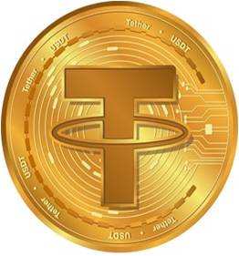
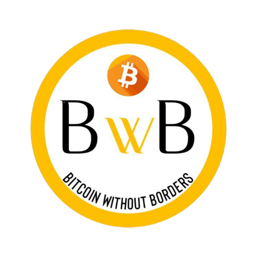
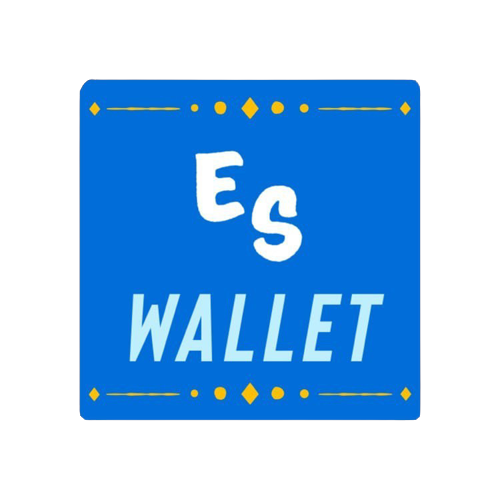

¿Qué es la Criptomoneda?
La Criptomoneda, también llamadas criptodivisas o criptoactivos, son un medio digital de intercambio, una moneda virtual,  basada en la tecnología blockchain, que actúa como un libro de contabilidad en el que se registran las operaciones y que cuenta con programadores independientes como verificadores. El concepto o idea de Criptomoneda fue descrita por primera vez por Wei Dai, en 1998, donde propuso la idea de la creación de un nuevo tipo de dinero que utilizara la criptografía (Ciencia que estudia los sistemas, claves y lenguajes ocultos, siendo asimismo, una técnica que protege los datos y documentos de cualquier usuario) como medio de control.
La Criptomoneda utiliza un cifrado criptográfico para asegurar transacciones financieras, verificar la transferencia de activos, controlar la creación de nuevas unidades adicionales, es decir, evitar que alguien pueda hacer copias, por ejemplo, con una foto o documento.
basada en la tecnología blockchain, que actúa como un libro de contabilidad en el que se registran las operaciones y que cuenta con programadores independientes como verificadores. El concepto o idea de Criptomoneda fue descrita por primera vez por Wei Dai, en 1998, donde propuso la idea de la creación de un nuevo tipo de dinero que utilizara la criptografía (Ciencia que estudia los sistemas, claves y lenguajes ocultos, siendo asimismo, una técnica que protege los datos y documentos de cualquier usuario) como medio de control.
La Criptomoneda utiliza un cifrado criptográfico para asegurar transacciones financieras, verificar la transferencia de activos, controlar la creación de nuevas unidades adicionales, es decir, evitar que alguien pueda hacer copias, por ejemplo, con una foto o documento.
El auge y las suculentas ganancias que parece que dan algunas de las monedas virtuales ha contribuido a su expansión, actualmente, existen más de 10 mil tipos de criptomonedas, pero solo pocas tienen un valor verdadero, entre estás podemos encontrar las siguientes cinco:

Ethereum, Ether (ETH)
Tether (USDT)

USD Coin (USDC)
Binance Coin (BNB)

Bitcoin en El Salvador (Antecedentes)
El Salvador hizo historia el día Lunes 06 de junio de 2021. El Congreso del país aprobó la Ley Bitcoin, esta se convertió en moneda de curso legal, además del dólar estadounidense, despejando el camino para que los residentes paguen impuestos y otras deudas con la criptomoneda, y permitiendo que cientos de miles de empresas en todo el país la acepten como pago. La nación centroamericana de 6.5 millones de habitantes ya marcó la ocasión con US$ 20 millones en compras de bitcoins y el despliegue de cientos de cajeros automáticos de bitcoins en todo el país, pero la mayor parte de las transacciones está programada para realizarse en la billetera oficial de bitcoins de El Salvador, denominada Chivo Wallet,  la cual para incentivar al ciudadano de un país donde la mayoría de la población no tiene acceso a internet, el gobierno está invitando a los salvadoreños a descargarla y esta regalará $30 en bitcoins. Según un estudio realizado por el National Bureau of Economic Research, solo una quinta parte de los salvadoreños que descargaron la aplicación Chivo Wallet la siguieron usando una vez gastado el bono de 30 dólares entregado por el gobierno. La adopción de la criptomoneda entra en un movimiento que ha hecho que la nación y muchos otros Estados debatan las oportunidades y los peligros de las criptomonedas.
la cual para incentivar al ciudadano de un país donde la mayoría de la población no tiene acceso a internet, el gobierno está invitando a los salvadoreños a descargarla y esta regalará $30 en bitcoins. Según un estudio realizado por el National Bureau of Economic Research, solo una quinta parte de los salvadoreños que descargaron la aplicación Chivo Wallet la siguieron usando una vez gastado el bono de 30 dólares entregado por el gobierno. La adopción de la criptomoneda entra en un movimiento que ha hecho que la nación y muchos otros Estados debatan las oportunidades y los peligros de las criptomonedas.
Diversas manifestaciones se realizaron en protesta contra la entrada en vigor de la polémica ley. Ciudadanos protestaron contra el Gobierno de Bukele y buscaban presentar una pieza de correspondencia que contiene la petición de derogar la Ley Bitcoin, pero se encontraron con barricadas y la UMO (Unidad de Mantenimiento del Orden) para impedir su avance. La falta de controles en El Salvador para el uso de criptomonedas en la política abre la posibilidad de que el crimen organizado o intereses externos financien la campaña presidencial para las elecciones de 2024, en las que también se elegirán a alcaldes y diputados, y tengan un “impacto” en la democracia de este país.  La elección de Nayib Bukele se ha puesto en duda por todo lo sucedido, es más, la agencia de calificación Moody's rebajó la carga de la deuda externa de la nación en julio después de la decisión de su gobierno de aceptar bitcoin como moneda nacional, diciendo que las medidas "reflejan una gobernanza debilitada" y "aumentan las tensiones con los socios internacionales". Más tarde ese mes, el Fondo Monetario Internacional, informa que está en conversaciones para otorgar a El Salvador un préstamo de US$ 1,3 mil millones. Aseguró que bitcoin era "demasiado volátil" para justificar su adopción como moneda nacional, incluso a la luz de beneficios que incluyen pagos rápidos, mayor inclusión financiera y transferencias transfronterizas más fáciles.
La elección de Nayib Bukele se ha puesto en duda por todo lo sucedido, es más, la agencia de calificación Moody's rebajó la carga de la deuda externa de la nación en julio después de la decisión de su gobierno de aceptar bitcoin como moneda nacional, diciendo que las medidas "reflejan una gobernanza debilitada" y "aumentan las tensiones con los socios internacionales". Más tarde ese mes, el Fondo Monetario Internacional, informa que está en conversaciones para otorgar a El Salvador un préstamo de US$ 1,3 mil millones. Aseguró que bitcoin era "demasiado volátil" para justificar su adopción como moneda nacional, incluso a la luz de beneficios que incluyen pagos rápidos, mayor inclusión financiera y transferencias transfronterizas más fáciles.
El escepticismo de bitcoin no impidió que otros países, particularmente en América Latina, expresen sus propias ambiciones de criptomonedas. Muchos de ellos elogiaron rápidamente la propuesta de bitcoin de El Salvador después de que la nueva ley aprobara una votación en la Asamblea a principios de junio con una supermayoría de 62 votos contra 22.
Con todo lo anterior, Bukele no ha perdido ni una gota de entusiasmo por la criptomoneda. Con frecuencia, se jacta en Twitter de haber comprado Bitcoin con fondos del gobierno. Pero desde que la divisa alcanzó un máximo de casi $69,000 dólares a principios de noviembre, el precio por unidad ha caído, bajando casi un 50% en un momento dado hacia finales de enero y reduciendo el valor de las tenencias de Bitcoin del país en decenas de millones de dólares. Bukele podría ser víctima de una de las principales razones por las que los gobiernos tienden a evitar el Bitcoin: su volatilidad.
Ventajas y Desventajas de la criptomoneda en El Salvador
VENTAJAS
El bitcoin en El Salvador es una gran oportunidad, que contiene riesgos y volatilidad, no obstante, podemos destacar las siguientes ventajas que traería si se implementara de manera correcta:
- Créditos revolventes usando bitcoin como colateral.
- Facilitación de infraestructura de pagos locales e internacionales de diversas fuentes.
- Reducción de costos de transacción en envío de remesas familiares.
- Adopción de nuevas tecnologías en segmentos de la población.
DESVENTAJAS
Algunos economistas mencionan que el implemento de bitcoin en la economía es malo para la estabilidad del país, debido a temas como: su falta de regulación, manipulación, estafas, consecuencias ambientales, riesgos fiscales, sanciones económicas para el país, desordenes monetarios, por mencionar algunas. Aunque sigue siendo un tema relativamente nuevo, no hay verdaderos expertos al día de hoy y sobran opiniones. No nos queda nada más que esperar y ver cómo continúa esta historia que, de momento, genera altas expectativas. Algunas desventajas que la criptomoneda son:
- Puede bajar la recaudación fiscal según proporción entre formalidad e informalidad.
- Posibles riesgos respecto del lavado de activos, aunque ya sucede en fuertes cantidades de dólares.
- El sistema financiero tradicional sería afectado por la reducción en transacción de remesas.
- Las estafas a personas que desconozcan de la plataforma serían casos comunes.
BwB (Bitcoin without Borders)
BwB (Bitcoin without Borders) es una organización, la cual tiene como objetivo mejorar la actual situación del bitcoin en El Salvador con la implementación de técnicas que ayuden a una mejor percepción de la criptomoneda y su respectivo manejo en los distintos factores tanto a favor como en contra en implementaciones de las finanzas de cada persona u organización.  La compañía busca dar conciencia a la población salvadoreña del tema del bitcoin, sus pros y contras, el uso correcto del mismo, cómo manejarlo, entre otras. Cabe recalcar, que toda esa información, además de encontrarse en la página web de la compañía, será también brindada en una nueva aplicación, la cual funciona como una wallet donde la población podrá hacer manejo del bitcoin. El nombre de la antes dicha aplicación es ES-Wallet, esta busca que los salvadoreños aprendan más sobre el tema del bitcoin y todo lo demás mencionado, siendo de la misma manera una fuente donde se pueda manejar la criptomoneda, en pocas palabras, ES-Wallet busca el conocimiento, la motivación y un centro de manejo del Bitcoin en El Salvador. Para que el bitcoin tenga un cambio en su situación, se tiene que brindar lo que los salvadoreños no tuvieron de primera instancia, la cual fue conocimiento y una fuente que lo brindara respecto al tema, la población no se educó para un manejo uniforme de la criptomoneda. La estrategia de "Chivo Wallet" incentivó solo en su momento, con la técnica de los $30 dólares se llamó la atención de los individuos, pero sin un previo conocimiento de este, sólo se retiró el dinero y dejaron la aplicación. BwB busca no cometer ese desliz, y que las personas confíen en esta nueva moneda legal del país teniendo un conocimiento previo y tengan la incentivación de emplearla.
El sistema empleado en ES-Wallet se basa en un campo que mantiene un registro constante de los movimientos del bitcoin en el país, este registro queda en un historial, el cual todos pueden tener acceso para verlo, sin embargo, este no se puede editar de ningunas manera. El sistema de seguridad empleado da un rastreo a cada cuenta de ES-Wallet, el hackeo de ese sistema no es posible, dado a que ese rastreo es grabado en innumerables computadoras, como un historial.  En los casos de errores de transacción o intento de estafas, nuestro servicio central desarrolló un manejo inteligente que detecta todo movimiento extraño, al darse el caso, se le preguntará al individuo si ha sufrido cierto inconveniente, para poder contactar y seguir el registro del usuario que comete la falta o tuvo la transacción por error. Si este usuario no devuelve lo entregado por error, o se tiene la evidencia de su estafa, este no podrá volver a ingresar a la plataforma, su DUI (este siendo un requisito para entrar), será eliminado y bloqueado de esta aplicación. La aplicación es gratis, esta disponible para Android y iOS; ES-Wallet busca algo diferente, quiere garantizar la mejora y lo mejor para el pueblo salvadoreño.
"NUESTRAS TÉCNICAS"
La compañía busca que el pueblo salvadoreño se interese en el uso de la criptomoneda, es un avance que marcará al país, por lo que, personal de esta compañía, recorrerá los centros de los distintos departamentos, en donde se impartirán clases para conocer más del bitcoin, su uso y métodos para implementarlos en un negocio o uso personal. Las clases están abiertas para todo público, el aprender será para todos los que lo deseen. Para más información puede dirigirse al siguiente enlace, o posicionarse en el índice de la página y dar clic en "Organización "BwB (Bitcoin without borders)".
El Bitcoin puede ser un nuevo camino para la nación, pero tenemos que conocer ese camino para experimentar en el mismo, los salvadoreños tienen la oportunidad aprender a manejar la criptomoneda; y aunque cada persona es libre de elejir el implementarla o no, esta compañía está dispuesta al servicio de todo individuo en busca del conocimiento de la criptomoneda.
About me
Cristina Serrano tuvo la iniciativa de abordar un tema como este, dada la mala situación en la que se encuentra su país de residencia, El Salvador, por el mal manejo de el Bitcoin. Ella busca una mejora, que las personas que lo deseen pueda integrarse al mundo de las criptomonedas, tener un avance como pueblo salvadoreño, el cual marque la historia del país de mejor manera posible. Sus ideas para mejorar la situación las empleó en su compañía, esta encargada y dispuesta a contribuir en lo que mande el tema. Cada pequeño paso, es un gran avance, la implementación del Bitcoin no será en vano.
• ¡Nos encantaría saber tu opinión respecto al tema! •
Name:
Email:
Comenta: